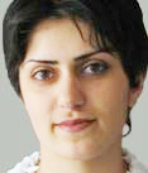

Only a small river separated
the Armenian and Azerbaijani land…
The war began and brought terror
and sadness with it…
It was said that the people
on the other side
of the river are our foes
and that they kill…

Nane Asatryan (Bagratuni)
Armenia
She was born in 1982, in Yeghegnadzor. Graduated from Yeghegnadzor N1 middle school, afterwards attended the city gymnasium. She got accepted to the television journalism department of the Yerevan pedagogical institute, graduated in 2004.
Work experience: In 1997 she was an out of state correspondent for the T.V. show “Antsudarts”, Nork T.V.: from 1997 – 1999 – She was an out of state correspondent for a line of programs for children and youth called “Areg” on public radio RA, also was the editor of the city gymnasium’s newspaper “Gisastgh”, from 2000 to 2004 she was already an instate correspondent of the “Areg” program, from 2001 - 2004 she was the host and a journalist for the youth program “16” on the “Armenakop” T.V. station. In 2005 she was a correspondent at Armenia’s channel 2 OTV of Armenia. She participated in many different seminars and educational programs that were organized by the NGO starting from 1997 on to this day, she also was a volunteer and a coordinator of a few programs (The civil club of Yeghegnadzor, The Teacher’s Union, The Institute of Democracy and Human Rights etc…)
From January 2006 she was the programs director for the Social Psychological and Analytical Center. From April 2006 she was the coordinator of the CCPMI in the regions of Vayots Dzor and Syunik.
Work experience: In 1997 she was an out of state correspondent for the T.V. show “Antsudarts”, Nork T.V.: from 1997 – 1999 – She was an out of state correspondent for a line of programs for children and youth called “Areg” on public radio RA, also was the editor of the city gymnasium’s newspaper “Gisastgh”, from 2000 to 2004 she was already an instate correspondent of the “Areg” program, from 2001 - 2004 she was the host and a journalist for the youth program “16” on the “Armenakop” T.V. station. In 2005 she was a correspondent at Armenia’s channel 2 OTV of Armenia. She participated in many different seminars and educational programs that were organized by the NGO starting from 1997 on to this day, she also was a volunteer and a coordinator of a few programs (The civil club of Yeghegnadzor, The Teacher’s Union, The Institute of Democracy and Human Rights etc…)
From January 2006 she was the programs director for the Social Psychological and Analytical Center. From April 2006 she was the coordinator of the CCPMI in the regions of Vayots Dzor and Syunik.